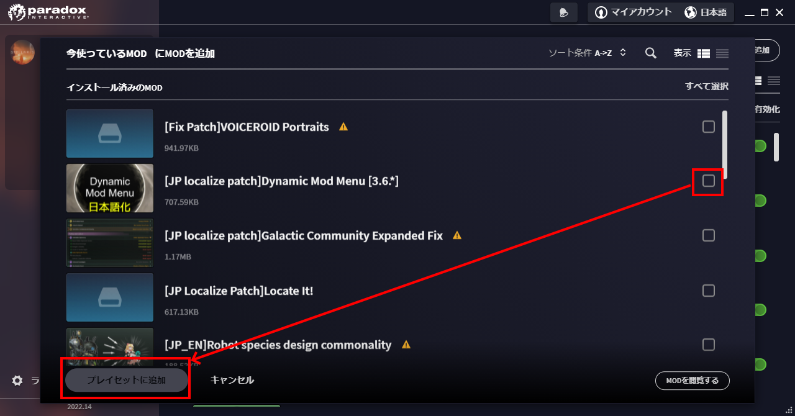

このガイドは、初めてStellarisのMod導入をしようと思っている人向けのガイドとなります。
なお、本ガイドはWindows OS上で動作するSteam版のStellarisで動作することを前提としています。
他の環境化ではあまり参考にならない可能性がありますのでご了承ください。
1. Modを導入し、ゲーム内で利用する
Steam版のStellarisの場合は、Steam WorkshopにてサブスクライブするだけでModを簡単に導入することができます。
1.1. Modの追加方法
まず、使いたいModをWorkshopから探してサブスクライブしてください。 この手順だけではまだゲームには反映されません。
-
StellarisのWorkshopのページにアクセスする
https://steamcommunity.com/app/281990/workshop/ -
目的のModを探す
-
サブスクライブボタンを押す
1.2. プレイセットを作成する
ゲームで使いたいModを適用するためのプレイセットを作成します。
-
Stellarisのランチャー画面を表示する
-
「新規プレイセットを追加」を押す

-
プレイセットの名前を入力し、「作成」ボタンを押す
-
プレイセットの画面にて、「Modをさらに追加」ボタンを押す
-
導入したいModにチェックを入れ、「プレイセットに追加」ボタンを押す
 -
必要なら順序を入れ替える
ロード順がカスタムの場合はModの数字の書いている所にマウスカーソルを合わせ
上下方向にドラッグ＆ドロップすることで順序の入れ替えが可能です。
1.3. プレイセットを選択し、ゲームを起動する
ホームに戻り、先ほど作ったプレイセットを選択した状態でゲームを開始してください。
これで、Modが適用された状態でゲームが開始されるはずです。
1.4. (補足)Modの対応バージョンが古い場合について
Modの対応バージョンが古く、現在のStellaris本体のバージョンと一致しないことがあります。
その場合については、原則最新版への対応を待つことをオススメします。
どうしても入れたい場合には、以下のガイドを参考にしてください。
2. Modの仕組みについて
複数のModを導入していると、Mod同士の相性によっては上手く動作しないことがあります。
そもそも導入したModはどのように適用されるのでしょうか。
この章ではこの概念的な適用の動きについて説明します。
2.1. Modの保存場所
概念説明をする前に、先にStellaris本体のデータやModの保存場所を記載しておきます。
- 本体の保存場所
-
本体の保存場所は、以下の手順で確認ができます。
-
Steamのローカルアプリを起動し、「ライブラリ」を表示する
-
ライブラリ上に表示されているStellarisを右クリック→「プロパティ」を選択する
-
「ローカルファイル」メニューの「参照」ボタンを押す
これでStellaris本体の保存場所が開くはずです。
特にSteamの保存先の設定等を変更していないのであれば、以下のパスになっているのではないかと思います。
C:\Program Files (x86)\Steam\steamapps\common\Stellaris -
- Modの保存場所
-
Modの保存場所は、本体の保存場所から見て、以下の相対パス上に存在します。
..\..\workshop\content\281990特にSteamの保存先の設定等を変更していないのであれば、絶対パスは以下のパスになっているのではないかと思います。
C:\Program Files (x86)\Steam\steamapps\workshop\content\281990このフォルダ内を開くと、数字の記載されたフォルダが大量に表示されます。
この数字のフォルダの中身一つ一つがそれぞれのModの中身になります。
どの数字がどのModを指しているかは、WorkshopのModのURLを確認すれば判別できます。 - 自作Modの保存場所
-
今回は説明の対象外とはなりますが、自作Modの保存場所も一応記載しておきます。
C:\Users\(ユーザー名)\Documents\Paradox Interactive\Stellaris\mod
2.2. ゲーム開始時に行われていること(概念図)
ゲーム開始時に行われている本体とModの動作イメージについては以下画像を参照してください。
本体データに対して、Modの内容をプレイセットの上から下(=ロード順)に適用していくような形で動作します。
※あくまで概念として記載したイメージなので、実際の内部動作とは異なる可能性があります。
2.3. ゲーム開始時に行われていること(ファイル上書きの例)
本体とMod、Mod間同士などで同名のファイルがあった場合、同名ファイルのデータはどう扱われるでしょうか。
概念図を元に考えると、同名ファイルは上書きされ、結果として最後に適用されたファイルが採用されることがわかります。
例として、私の自作Mod「AI国家のゲートウェイ建造ラッシュがうざい！」を適用した場合を考えてみましょう。
このModのフォルダ構成は以下の通りです。
common
└megastructures
└05_gateways.txt本体にもModにもcommon\megastructures\05_gateways.txtがあります。
このModのみを適用した状態でゲームを起動するとどうなるでしょうか。
まず、最初に本体のcommon\megastructures\05_gateways.txtの内容が読み込まれます。
続いてModのcommon\megastructures\05_gateways.txtが読み込まれ、
本体側のcommon\megastructures\05_gateways.txtの内容が上書きされます。
つまり本体側のcommon\megastructures\05_gateways.txtの内容は無視され、
Mod側のcommon\megastructures\05_gateways.txtのみが採用されることがわかります。
2.4. ゲーム開始時に行われていること(別名だが記述が重複している場合の例)
ファイル名自体が別名でも、内容に重複があった場合は片方の内容のみが採用されます。
読み込み処理はファイル名順に行われますが、先勝ちか後勝ちかはファイルの配置場所に応じて変わります。
例として、私の自作Mod「え、交易路に海賊が！？」を適用した場合を考えてみましょう。
このModのフォルダ構成は以下の通りです。
common
├situations
│└pirate_situations.txt
├events
│├pirate_situation_events.txt
│└pirate_1_events.txt
└localisation
└pirate_situation_l_japanese.ymlファイル名自体は本体と一切被っていないので、2-3のようなファイル上書きの動作はされません。
ただし、events\pirate_1_events.txtには、本体側のevents\pirate_events.txtと同じ定義が記述されています。
# 本体側の「events\pirate_events.txt」のコード例
country_event = {
id = pirate.1
title = "pirate.1.name"
picture = GFX_evt_pirate_armada
show_sound = event_space_battle
location = event_target:pirate_system
～ 以下略 ～
}
# Mod側の「events\pirate_1_events.txt」のコード例
country_event = {
id = pirate.1 # ←このIDが被っているイベントは同じ定義扱いになる
hide_window = yes
is_triggered_only = yes
～ 以下略 ～
}pirate.1の内容が重複していることがわかります。
ファイル名順に読み込みが行われるため、まず、本体側のpirate_events.txtのpirate.1の内容が読み込まれます。
続いてMod側のpirate_1_events.txtに記述されたpirate.1の内容が読み込まれます。
events以下のファイルは先に読み込んだ方が優先されるため、結果として本体側のevents\pirate_events.txtは無視されます。
Mod側のevents\pirate_1_events.txtのみが採用されることになります。
先に読み込んだ方と後に読み込んだ方、どちらが優先されるかは英語Wikiを確認してください。
https://stellaris.paradoxwikis.com/Modding#Overwriting_specific_elements
2.5. ゲーム開始時に行われていること(依存関係)
Mod制作者が他Modとの依存関係を記述している場合、設定した順番を考慮したロード順となります。
これは、利用者の設定したロード順の設定よりも優先されます。
以下2つのModを例に見てみましょう。
前者は私が代理公開中の略ｱ略様作のポートレート追加Modとなります。
後者はそのModを最新バージョンのStellarisでも動くように修正するためのパッチ用Modとなります。
「[Fix Patch]F17 VOICEROID Portraits」のdescriptor.modをテキストエディタで開いてみてください。
以下のような記載がされているのがわかると思います。
version="1.0.0"
dependencies={
"[代理公開]F17 VOICEROID Portraits"
}
tags={
"Graphics"
"Leaders"
"Species"
"Fixes"
}
name="[Fix Patch]F17 VOICEROID Portraits"
picture="thumbnail.png"
supported_version="3.6.1"
remote_file_id="2759645085"dependenciesで囲まれた部分が依存関係の記述になります。
このModは「[代理公開]F17 VOICEROID Portraits」が適用されている上で利用することを前提としているよ、という意味です。
この記述があると、プレイセットで指定したロード順に関わらず、ロード順が以下で固定されます。
-
[代理公開]F17 VOICEROID Portraits
-
[Fix Patch]F17 VOICEROID Portraits
3. Modの不具合や、Mod同士の競合について 編集
2章の説明内容を踏まえた上で、Modで起きる不具合や複数Modを入れたときの競合が何故起きるのかを考えてみましょう。
3.1. 対応バージョンの古いMod
私の自作Mod「AI国家のゲートウェイ建造ラッシュがうざい！」を例にして考えてみましょう。
Stellaris Ver3.6.1では、common\megastructures\05_gateways.txtに更新が入りました。
私の自作Modは当時、このVer3.6.1への対応を当日中に完了させていましたが、
仮にModの更新が行われず、Modの対応バージョンが3.6.0だった場合には何が起きていたと考えられるでしょうか。
「AI国家のゲートウェイ建造ラッシュがうざい！」は、common\megastructures\05_gateways.txtを上書き修正しています。
2章で説明したとおり、Modと本体で同名のファイルがある場合は、Mod側のファイルの内容のみが反映されます。
本体側の記述は無視されてしまうため、Ver3.6.1で更新されたはずのゲートウェイの定義を壊してしまうことになります。
この例のように、ファイルを丸々上書きするような形で修正が入るModや、ファイル名が異なっていても元の定義を書き換えるような修正を入れるケースのModは、常に最新版へ対応されているかどうかの確認が必要です。
古いバージョンのModを使い回すと動作不良を招きます。
日本語Wiki等を見ていると、Stellaris本体の英語部分を日本語化する日本語化パッチなどを古いまま使っている人がおり、この手の不具合を起こしている報告が散見されていますが、上記の理由から、対応バージョンが古い場合は利用を控えるのが無難です。
3.2. 同じファイルや定義を書き換えている場合
同じファイルや定義を書き換えるModを複数入れると、意図しない動作を起こします。
以下のModを2つ同時に入れたらどうなるでしょうか。
前者は私の自作Mod、後者は他作者様のModです。
本体と各Modにはそれぞれ軌道上居住地周りの定義ファイルが含まれています。
-
Stellaris本体
-
common\megastructures\habitats.txt
-
-
No AI habitats…元々あった星系だけは許そう
-
common\megastructures\habitats.txt
-
-
No AI habitats (3.6)
-
common\megastructures\habitats___noAI___.txt
-
ファイル構成だけ見ると、両方のModを採用した場合、元々あった～のModは本体側のhabitats.txtを上書きしているように見えます。
No AI habitats (3.6)は本体とはファイル名が違うのでhabitats___noAI___.txtがそのまま展開されるように見えます。
ただ、No AI habitats (3.6)のhabitats___noAI___.txtの中身は本体のhabitats.txtと同じ定義を書き換える形で記載しています。
habitats.txtとhabitats___noAI___.txtを名前順にするとhabitats___noAI___.txtが後になります。
megastructuresのフォルダ内は後に読み込んだ方が優先されるため、habitats___noAI___.txtの内容が優先されることになります。
つまり、No AI habitats (3.6)の仕組みが採用され、元々あった～のModの内容は無視されることがわかります。
両方入れたはずなのに片方のModは動作しなくなりましたね。
今回例で出したModは、単独ファイルしか書き換えていないので影響も少ないですが、色んなファイルを書き換えているModの1ファイルだけが他Modの内容に置き換わったとしたらどうでしょうか。当然Modは壊れ、意図しない動作をするでしょう。
場合によってはゲームの起動自体ができず、エラーで落ちるかもしれません。
このように、複数のModを入れている場合は同じ内容を書き換えていないかなどの注意が必要です。
Mod制作者によっては、Modの説明欄に書き換えている内容や他Modとの相性を明記してくれている場合がありますが、全ての組み合わせを網羅することは不可能なので、基本的には自分自身で確認をする必要があります。
4. Modを利用する上での心構えについて
最後に、Mod利用する上で意識をしておいて欲しいことについて説明します。
4.1. ソフトウェアは生ものです
Windows OSも、Stellarisのゲーム本体も、Modも含めてソフトウェアは生ものです。
日々改良され土台となる仕組みそのものから変わっていく現代では、維持管理されていないソフトウェアはすぐに寿命が来ます。
そして、維持管理をするにも時間やお金などのコストがかかります。
実際Modを公開している人は沢山いますが、維持管理することを放棄し更新が止まってしまったModも星の数ほど見受けられます。
Modを公開している人にとってのメリットは、人によって違います。
承認欲求だったり、仕組みを知るための知的好奇心だったり、集金しようとしている人にとってそれはお金かもしれません。
いずれの理由にせよ、維持管理を続けるための煩わしさというデメリットが公開するメリットを上回ったら、作者が維持管理をやめてしまうことは間違いありません。
維持管理を続けてもらうためには、メリットを提示したり、デメリットとなる負担を軽くするような協力をするほかありません。
制作者を無限に持ち上げろなどというつもりはありませんが、長いこと更新の止まっているModに対して、「アップデートしろ」とだけを書いたところでこのデメリットがメリットを上回ることはなく、より足が遠のいてしまうような結果になるのは想像に難くないでしょう。
4.2. 不具合報告は詳細に書こう
例えば、Stellaris本体のバージョンアップの影響で意図しない動作を起こすようになったModがあった場合、
制作者にどのような報告をすればいいでしょうか。
「Modが動きません」とだけ報告をすれば大丈夫でしょうか？
この報告だと具体的に何が問題になっているのかわかりません。
原因の調査にもコストがかかります。何もわからない状態から調査を始めても、問題点には気がつけないかもしれません。
調査の手助けになるような具体的な報告をすれば、この調査の負担を減らし、開発者の手を動かす要因に繋がる可能性があります。
例えば以下のように具体的に報告をするように意識をすると良いでしょう。
この時、可能なら具体的な原因や解決策まで提示できるとより開発者の負担を減らす結果に繋がるでしょう。
また、エラーメッセージが出ているなら、その内容を提示するのも参考になるかもしれません。
Stellarisプレイ後のエラーメッセージは、以下のファイルに出力されています。
C:\Users\(ユーザー名)\Documents\Paradox Interactive\Stellaris\logs\error.log
■発生内容
ゲーム開始時にランダム生成される種族が、このModの種族の時のみ国家名が空欄になる
■再現手順
以下の手順で再現しました。
1.このModだけを適用した状態でゲームを開始する
2.communicationのコンソールコマンドで全ての国家との通信を確立し、このModで追加された種族の国家を探す
3.当該国家名が空欄となっていることを確認する
■原因や解決方法
他の種族追加系のModと比較したところ、他Modにはネームリストの記述がありました。
common\name_lists\xxxxxx.txtというファイルが必要になるかもしれません。4.3. 更新されないModをどうしても使いたかったら…
作者が諦めてしまった以上は、またその作者がやる気を出すか、誰かが引き継ぐのを待つしかないでしょう。
私みたいな弱小Modderが出している登録者2桁のModならともかく、4～5桁登録者がいる大手の人気Modなら利用者の中にMod制作者が沢山いるでしょうから、誰かが引き継いでくれるかもしれません。
ただ、それだけ利用者がいてもなお放置され続けているということは、結局は引き継いで得られるメリットより、そのModを維持管理して得られるデメリットの方が大きいと判断されているということに他なりません。
そのデメリットを考慮してでも欲しいというのなら、自分で手をあげるしかないでしょう。
それができないのであれば、あなたも結局は維持管理するだけのコストを払ってまでModを使いたくないと判断しているということになります。
「アプデしろ」とコメントを書くのは簡単ですが、そのコメントを書く前に、少し考えて見てはいかがでしょうか。
4.4. 引き継ぐために、Modの仕組みを覚えたい
このデメリットを支払ってまでModを引き継いで対応したいともし考え、
Modの仕組みについて調べ始めることができたならその瞬間からあなたはStellarisの新しいModderです。
少しでもその調査の役にたつように、いくつかのURLを貼ってこのガイドを終わりにしたいと思います。
Modに関しての体系的な情報は、英語Wikiに記載されています。
Modding - Stellaris Wiki
https://stellaris.paradoxwikis.com/Modding
日本語環境では残念ながら体系的な情報はありません。
しかし、少し古いものの、初心者向けの導入に役立つガイドはいくつかあるようです。
こちらのM_Gamelin様やNaK1119様のガイド一覧は、日本語で記載されている非常に優良なガイドですので、
参考になるかと思います。まずはこちらのガイドの通りに実施してみてはいかがでしょうか。
M_Gamelin様のガイド一覧
https://steamcommunity.com/profiles/76561198087424981/myworkshopfiles/?section=guides&appid=281990
NaK1119様のガイド一覧
https://steamcommunity.com/profiles/76561198332246255/myworkshopfiles/?section=guides&appid=281990
また、私も個人的なMod作成時のメモをSteamガイドに載せていますが、ある程度Modの仕組みを理解した上でないと読むのが少し難しいかもしれません。
https://steamcommunity.com/profiles/76561199152309881/myworkshopfiles/?section=guides&p=1&numperpage=30
以上